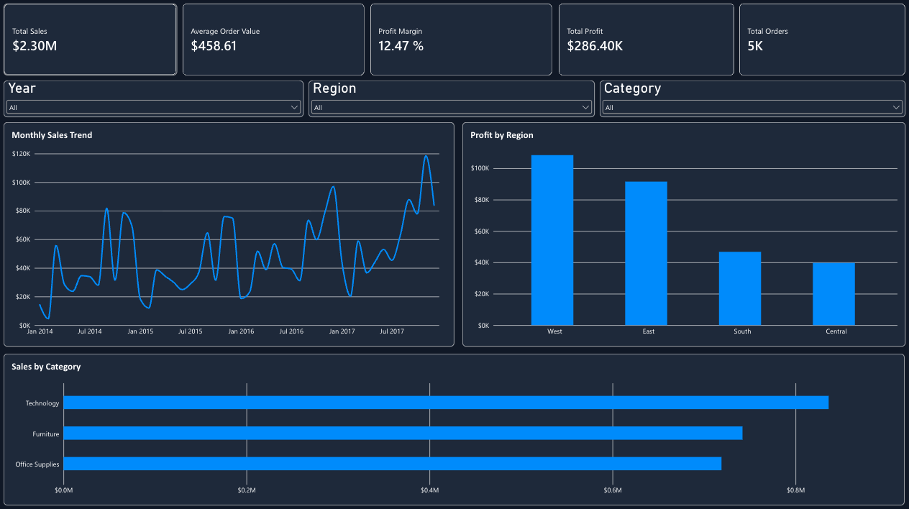

Superstore Sales Performance Dashboard
An interactive Power BI dashboard analyzing 9,994 retail records to understand sales trends, profitability, order performance, and regional results.
Dashboard Overview

The dashboard includes five KPI cards, three analytical charts, and interactive filters for Year, Region, and Category.
Development Process
Expand each section to explore the steps used to develop the dashboard.
01. Data Import
Loading the Superstore dataset
⌄
Imported the Superstore CSV dataset into Power BI.
02. Data Cleaning
Preparing data with Power Query
⌄
Used Power Query to review the dataset, correct column data types, fix text encoding, and check for duplicate records. Verified that all 9,994 records were retained.
03. Data Modeling
Preparing the reporting model
⌄
Created and reviewed the Power BI semantic model using the cleaned Superstore dataset. Verified the available fields and prepared the model for DAX calculations and reporting.
04. DAX Calculations
Creating five KPI measures in Power BI
⌄
Created five DAX measures to analyze sales, profitability, and order performance. These calculations update automatically when dashboard filters are applied.
DAX Measures
1. Total Sales
Total Sales = SUM('Sample - Superstore 3'[Sales])2. Total Profit
Total Profit = SUM('Sample - Superstore 3'[Profit])3. Total Orders
Total Orders = DISTINCTCOUNT('Sample - Superstore 3'[Order ID])4. Profit Margin
Profit Margin = DIVIDE([Total Profit], [Total Sales], 0)5. Average Order Value
Average Order Value = DIVIDE([Total Sales], [Total Orders], 0)
05. Dashboard Development
Building KPI cards and visualizations
⌄
Built an interactive Power BI dashboard using KPI cards and charts to visualize sales performance, profitability, and business trends.
1. KPI Cards - Part 1
Started creating KPI cards to display key sales and profit metrics.
2. KPI Cards - Part 2
Completed the five KPI cards, including Total Sales, Total Profit, Total Orders, Profit Margin, and Average Order Value.
3. Monthly Sales Trend
Created a line chart to analyze how sales changed over time.
4. Sales by Category
Created a bar chart to compare sales across product categories.
5. Profit by Region
Built a column chart to compare profitability across regions.
6. Dashboard Polishing
Refined the dashboard layout, spacing, colors, and formatting to create a consistent dark-themed design.
06. Interactive Slicers
Filtering dashboard data dynamically
⌄
Added interactive slicers for Year, Region, and Category. These filters allow users to explore specific segments of the dataset while automatically updating KPI cards and visualizations.
1. Year Slicers
Created dropdown filters to analyze sales and profit performance across different years and geographic regions.
2. Region and Category Slicer
Added region and category filter to compare performance across Furniture, Office Supplies, and Technology.
07. Final Dashboard Showcase
Exploring the completed Power BI dashboard
⌄
The completed dashboard brings together five KPI cards, three visualizations, and interactive filters to analyze 9,994 retail sales records. It provides an overview of sales performance, profitability, and business trends.
Completed Dashboard Demonstration
This recording demonstrates the final dashboard, including its layout, key metrics, visualizations, and interactive filtering capabilities.
Key Findings
Technology generated the highest sales among the three product categories. The West region produced the highest total profit. The overall profit margin was approximately 12.47%.
Dataset: Sample Superstore Dataset (GitHub)
GitHub Repository
Explore the project documentation, DAX measures, and dashboard files on GitHub.
View GitHub Repository →